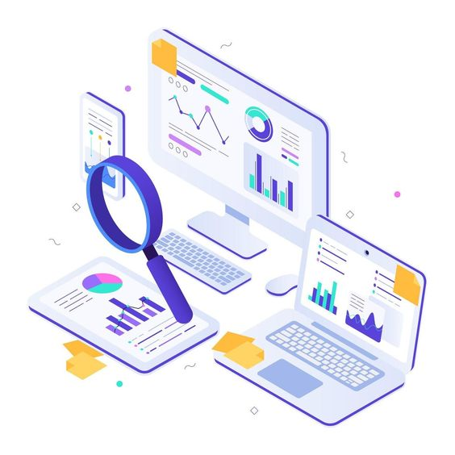

SEJARAH PERUSAHAAN
BI Production didirikan pada tahun 2024 dengan tujuan memberikan solusi digital inovatif yang dapat membantu bisnis dan individu untuk berkembang di era digital. Berawal dari tim kecil yang terdiri dari para profesional kreatif dan teknis, BI Production telah tumbuh menjadi perusahaan yang diakui di industri teknologi digital.
Pada awal perjalanan, kami fokus pada pengembangan website dan aplikasi mobile untuk klien lokal. Seiring dengan bertambahnya pengalaman dan keahlian, kami memperluas layanan kami mencakup digital advertising, branding, dan berbagai produk digital lainnya. Dengan komitmen untuk selalu memberikan kualitas terbaik, BI Production terus berinovasi dan memperbarui teknologi untuk memenuhi kebutuhan klien yang terus berkembang.
Kami bangga telah bekerjasama dengan berbagai perusahaan dari berbagai industri, membantu mereka untuk mencapai tujuan bisnis mereka melalui solusi digital yang efektif dan kreatif.
VISI
Menjadi pemimpin dalam penyediaan solusi digital yang inovatif dan terintegrasi, yang dapat memberikan dampak positif bagi bisnis dan masyarakat di seluruh dunia.
MISI
Inovasi Terdepan: Mengembangkan teknologi dan layanan digital terbaru yang dapat membantu klien kami untuk tetap kompetitif di pasar global. Kualitas dan Kepuasan Klien: Memberikan produk dan layanan berkualitas tinggi dengan fokus pada kepuasan klien melalui pendekatan yang personal dan profesional. Pemberdayaan Tim: Menciptakan lingkungan kerja yang inspiratif dan kolaboratif dimana setiap anggota tim dapat berkembang dan memberikan kontribusi terbaik mereka. Keberlanjutan: Menerapkan praktik bisnis yang berkelanjutan dan etis dalam setiap aspek operasional kami. Kolaborasi dan Kemitraan: Membangun hubungan jangka panjang dengan klien, mitra, dan komunitas untuk mencapai kesuksesan bersama.
Dengan sejarah yang kuat dan visi misi yang jelas, BI Production berkomitmen untuk terus berkembang dan menjadi mitra digital terpercaya bagi setiap bisnis yang ingin mencapai kesuksesan di era digital.